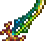

Explore Terraria's Vast Arsenal of Weapons
Terraria features a wide variety of weapons for player to use in combat. Here's a look at some of the most powerful weapons categorized by type, each with an image.
Melee Weapons

Terra Blade- A legendary sword that combines multiple rare swords.
Daybreak- A throwing spear that sticks to enemies and deals continuous damage.
Range Weapons
Vortex Beater- A rapid-fire gun that shoots explosive bullets.
Celebration MK2- A rocket launcher that fires exploding fireworks
Magic Weapons

Lunar Flare- A staff that summons a powerful beams from the sky.
Last Prism- A mana consuming weapon that fires a massive energy beam.
Summoning Weapons

Stardust Dragon Staff- Summons a powerful dragon to attak enemies.

Xeno Staff- Summons UFOs that shoot lasers at your enemies.